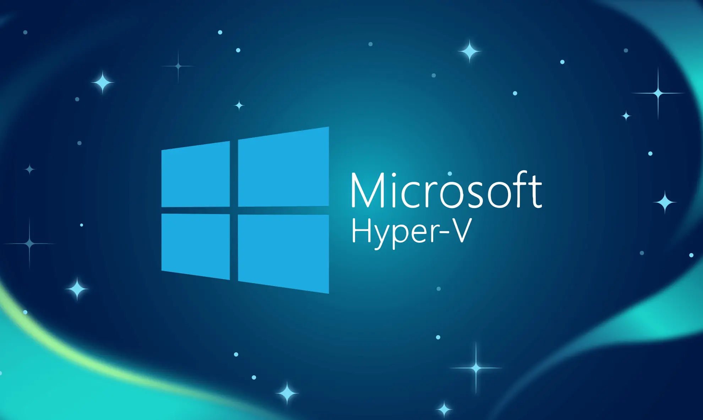
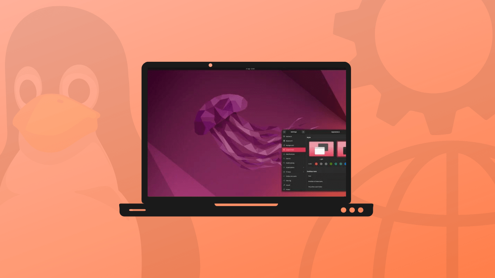
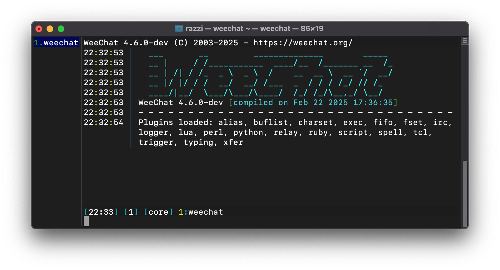
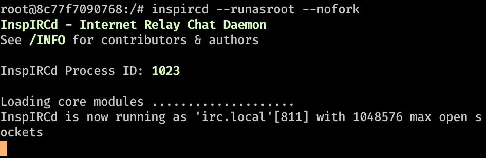

<!DOCTYPE html>
<html lang="en">
<head>
  <meta charset="UTF-8" />
  <meta name="viewport" content="width=device-width, initial-scale=1.0" />
  <title>Building a Multi-Page Site</title>
  <link rel="stylesheet" href="../assets/style/style.css" />
  <script src="/IRCWEB/assets/scripts/NavbarCloseLogic.js" defer></script>
</head>
<body>
  <div class="layout">
    <aside class="sidebar">
      <h1 class="site-title">Sette opp IRC server på en Ubuntu-Server i Hyper-V </h1>
        <div class="menu">
        <div class="menu-section">
          <button class="menu-toggle"> General information▾</button>
          <ul class="menu-list">
            <li><a  class="active" href="../introduksjon/innhold.html">Introduksjon til prosjekt</a></li>
          </ul>
        </div>
        <div class="menu-section">
          <button class="menu-toggle"> Steg-for-steg gjennomgang▾</button>
          <ul class="menu-list">
            <li><a href="../steg-for-steg/hyperv.html">Låse opp Hyper V</a></li>
            <li><a href="../steg-for-steg/ubuntus.html">Ordne en Ubuntu Server</a></li>
            <li><a href="../steg-for-steg/ubuntusystem.html">Sette opp Ubuntu Server Systemet</a></li>
          </ul>
      </div>
    </aside>
    <main class="content">
      <article>
        <header>
          <a href="#" class="nav-btn">←</a>
          <a href="ubuntus.html" class="nav-btn next">→</a>
        </header>

        <h1>Velkommen!</h1>
        <p>I denne opplæringen skal jeg demonstrere hvordan man setter opp en IRC-server på en Ubuntu-server. Oppsettet utføres ved hjelp av Hyper-V i Windows som vert for den virtuelle maskinen. Til kommunikasjon benyttes Weechat som klient, mens InspIRCd brukes til å konfigurere og administrere selve IRC-serveren. </p>

        <h2>Hva du vil lære</h2>
        <ul>
          <li>Hva Hyper-V og en Ubuntu-Server er.</li>
          <li>Litt informasjon om IRC-servere, Weechat og InspIRCd.</li>
          <li>Sette opp en IRC-Server på en Ubuntu-Serber i Hyper-V.</li>
          <li>Hvordan å bruke SSH.</li>
          <li>Installere og konfigurere InspIRCd, MOTD og Rules.</li>
          <li>Koble IRC-Serveren til Weechat.</li>
          <li>Lage et chatrom som har en Python-bot</li>
          <li>Bruke WSL (Windows Subsystem for Linux) for å koble til serveren som bruker.</li>
        </ul>

        <h2>Introduksjon til programmene</h2>

        <h3>Hva er Hyper-V?</h3>
        <p>Hyper-V er virtualiseringstjenesten til Windows. Programmet er inkludert i Pro- og Enterprise-utgavene av Windows. For å bruke programmet må man ha Windows 10/11 Pro eller Enterprise.</p>
        <p>Hyper-V kan brukes til å opprette virtuelle maskiner på x86-64-systemer, som kan kjøre alt fra Windows til Linux. Med Hyper-V kan man kjøre flere separate virtuelle maskiner på én fysisk maskin. Dette er en praktisk løsning i driftsmiljøer for å spare plass og strøm.</p>
        <p>Det er også nyttig for enkeltpersoner. Hvis man tester og laster ned programmer fra ukjente kilder, gir virtualisering bedre kontroll over hva hver maskin har tilgang til, og et angrep på en virtuell maskin påvirker ikke hovedsystemet. Dette kalles gjerne et gjesteoperativsystem.</p>
        
        <p class="source">
          <a href="https://learn.microsoft.com/en-us/windows-server/virtualization/hyper-v/overview" target="_blank" rel="noopener noreferrer">
            Kilde: Microsoft Docs
          </a>
        </p>

        <h3>Hva er en Ubuntu-Server?</h3>
        <p>Ubuntu Server er en populær Linux-distribusjon spesielt utviklet for servermiljøer. Den er basert på Debian og utviklet av Canonical Ltd. Ubuntu Server tilbyr et stabilt, sikkert og brukervennlig operativsystem som er ideelt for ulike typer serverapplikasjoner og tjenester.</p>
        <p>Ubuntu Server kommer med en rekke forhåndsinstallerte verktøy og pakker som gjør det enkelt å sette opp og administrere servere. Den støtter et bredt spekter av serverroller, inkludert webservere, databaser, filservere, e-postservere med mer.</p>
        <p>En av fordelene med Ubuntu Server er dens brukervennlighet og omfattende dokumentasjon. Den har et stort fellesskap av brukere og utviklere som bidrar til å forbedre og støtte operativsystemet, noe som gjør det enklere for både nybegynnere og erfarne brukere å finne hjelp og ressurser.</p>
        
        <p class="source">
          <a href="https://ubuntu.com/server" target="_blank" rel="noopener noreferrer">
            Kilde: ubuntu.com
          </a>
        </p>

        <h3>Om WeeChat</h3>
        <p>WeeChat er en IRC-klient som brukes for å koble til og kommunisere på IRC-servere. Den kjører i terminalen og er kjent for å være lett, rask og svært tilpasningsdyktig. Vi bruker WeeChat til å koble oss til vår egen IRC-server og delta i chatrommene vi har satt opp.</p>
        <p>Programmet støtter også utvidelser og skript skrevet i flere språk, blant annet Python, noe som gjør det mulig å automatisere eller utvide funksjonaliteten etter behov. Dette gir oss stor fleksibilitet og kontroll over hvordan vi bruker IRC-klienten.</p>
        
        <p class="source">
          <a href="https://wiki.gentoo.org/wiki/WeeChat" target="_blank" rel="noopener noreferrer">
            Kilde: Gentoo Wiki
          </a>
        </p>

        <h3>Om InspIRCd</h3>
        <p>InspIRCd er en IRC-daemon (Internet Relay Chat-daemon) skrevet helt fra bunnen av i C++. En IRC-daemon er serverprogramvare som gjør det mulig å drive et IRC-nettverk og kommunisere via kanaler og private meldinger. Vi bruker InspIRCd til å hoste vår egen IRC-server, som kjører i bakgrunnen og håndterer all trafikk og tilkoblinger til chatten.</p>
        <p>InspIRCd er designet for å være modulær og utvidbar, noe som betyr at funksjonaliteten kan tilpasses ved å legge til eller fjerne moduler etter behov. Dette gjør det enkelt å skreddersy serveren etter våre egne behov og preferanser.</p>
        
        <p class="source">
          <a href="https://wiki.archlinux.org/title/InspIRCd#" target="_blank" rel="noopener noreferrer">
            Kilde: Arch Linux Wiki
          </a>
        </p>
        <header>
          <a href="#" class="nav-btn">←</a>
          <a href="ubuntus.html" class="nav-btn next">→</a>
        </header>
      </article>
    </main>

  </div>

  

</body>
</html>
